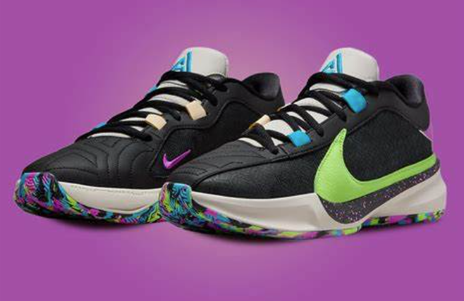

Sneakers
La Puma All Pro Nitro est la dernière évolution de la Puma Rise Nitro. La marque a décidé de pousser les limites de cette dernière avec cette nouvelle itération, découvrez dans ce test de la Puma All Pro Nitro, pourquoi cette paire est une réussite. Tout d’abord, revenons un peu en arrière pour comprendre l’histoire des baskets Puma et leur retour sur les parquets. La Puma All Pro Nitro est en réalité une référence à la Puma Clyde All Pro, qui avait déjà fait sensation lors de sa sortie en 2019-2020. Elle avait été saluée comme l’une des meilleures paires de basket de tous les temps par de nombreux testeurs aux États-Unis. Puma a décidé de reprendre cette base solide et de la perfectionner encore davantage en proposant un modèle plus léger, des matériaux plus durables, et une paire mise au goût du jour pour la communauté du basket en 2023.
≃100 €
ADIDAS HARDEN VOLUME 7 : LA CHAUSSURE DE BASKET PARFAITE ?
Si vous êtes un fan de chaussures de basket, vous avez probablement entendu parler de la Adidas Harden Volume 7. Cette paire a suscité beaucoup de questions et de spéculations depuis son annonce. Dans cet article, nous allons passer en revue tout ce que vous devez savoir sur la Harden Volume 7 ! En ce qui concerne le design, la Harden Volume 7 est une chaussure de basket qualitative, mais elle a également une esthétique assez particulière, avec un design plutôt disruptif. Certaines personnes ont remarqué des inspirations de la Jordan 15 dans le design de la chaussure, tandis que d’autres ont pensé à des Yeezy. Le design est une question de goût, mais globalement, la Harden Volume 7 est une paire qui ne laisse pas indifférent. Cela donne à la chaussure un look plus épuré et élégant, tout en faisant référence aux modèles précédents de la marque.
J’aime aussi le fait que le branding soit discret, on peut retrouver les trois bandes Adidas à l’arrière de la chaussure, ce qui me rappelle les anciens modèles D-Rose. C’est un petit clin d’œil sympa pour les fans de l’ancienne star des Chicago Bulls.
160 €
LEBRON 20 : TEST DE L’UNE DES MEILLEURES PAIRES DE L’ANNÉE !
Aujourd’hui, il est l’heure de revenir sur le test de la Nike Lebron 20, testée récemment par Rookicks. Toutes les infos dont vous avez besoin, c’est par ici !
Commençons d’abord par le sujet qui fâche à propos de cette LeBron : le prix. La paire est proposée au tarif de 200 euros, ce qui peut sembler élevé pour certains, surtout pour les plus jeunes. Bien que LeBron James soit l’un des meilleurs joueurs de basketball de l’histoire, le prix reste un obstacle pour beaucoup.
Il n’est cependant pas rare de trouver des réductions de 20 à 30% sur les chaussures, ce qui peut être une excellente occasion pour les fans de basket de s’offrir une paire de LeBron 20 à un prix plus abordable. Malgré son prix élevé, les performances de la Nike LeBron XX sont vraiment satisfaisantes. La qualité globale de la paire est vraiment une belle surprise, notamment son confort et son amorti, ce que l’on va analyser par la suite.
Une fois que vous aurez trouvé la bonne taille, la chaussure est très confortable à porter. Il faudra par contre penser à prendre une demi-taille au-dessus de votre taille habituelle. Les Nike LeBron XX ont tendance à être un peu plus grandes et plus larges que les autres chaussures de basket de la marque.
La languette de la chaussure est également assez solide, ce qui permet de bien serrer les lacets pour un maintien optimal du pied.
199,99 €
LE TEST COMPLET DE LA GIANNIS FREAK 5

Le meilleur de Nike au niveau du rapport qualité/prix ? On vous dit ça dans ce test complet de la Giannis Freak 5, la cinquième paire signature de Giannis ANTETOKOUNMPO. Les Nike Zoom Freak 5, sont la cinquième chaussure signature de Giannis Antetokounmpo. Déjà titré MVP et défenseur de l’année, Giannis nous présente une chaussure qui pourrait passer pour une paire de futsal à première vue, mais ne vous y trompez pas, la paire est bien pour basketteurs. Contrairement à certaine autre ligne de signatures qui maintiennent un design similaire, chaque modèle de Giannis est radicalement différent, et c’est également le cas ici. En ce qui concerne le design, c’est une affaire de goût personnel. À la rédaction, on n’est pas fan. On est refroidi par les gros Swoosh sur la partie extérieure du pied, une caractéristique récurrente de ses signatures. Il existe également des options de personnalisation pour ceux qui veulent choisir les couleurs de la signature shoe. Ce qui rend cette paire particulièrement intéressante, ce sont les détails subtils. Le numéro 34, représenté entre la paire gauche et droite, crée le chiffre emblématique de Giannis. De plus, le logo du Greek Freak est présent sur la languette. On retrouve à l’intérieur de la languette sa signature et sur le rebord de la semelle les cinq prénoms des membres de sa famille. Ces détails donnent une vraie personnalité à la paire et améliorent le design global de la paire.
≃100 €
NIKE LEBRON 21 : LA REINE DES PAIRES DE BASKETBALL?

Aujourd’hui, nous allons parler d’une paire de baskets que beaucoup d’entre vous attendaient avec impatience : la Nike LeBron 21. C’est déjà le 21e modèle de la ligne LeBron James, ce qui marque une carrière exceptionnelle de 21 ans dans le monde du basket, débutée en 2002. Ce dernier opus fait suite à la LeBron 20, déjà une des meilleures paires de l’année dernière. Alors, que vaut vraiment la LeBron 21? C’est ce que nous allons découvrir dans ce test ! La LeBron 21 est proposée au prix de 200 euros. Elle est proposée à 200 euros, car Nike surf sur plusieurs aspects de la carrière de LeBron. LeBron est un des joueurs les plus populaires au monde qui n’a plus rien à prouver parce que nombreux le désigne comme le meilleur joueur au monde. La paire est un condensé de technologie Nike proposé dans une chaussure aux matériaux haut de gamme. Enfin, on est sur un joueur qui a proposé 21 modèles signatures, des centaines de produits à son nom donc Nike en profite pour en demander un bon billet. Toutefois, en surveillant les soldes, le Black Friday et d’autres offres spéciales, il est possible de trouver cette paire à un tarif plus abordable, ce qui la rend d’autant plus intéressante pour les passionnés de basketball.
La Nike LeBron 21 présente un design qui diffère de sa prédécesseure, la LeBron 20. On reste sur un modèle low, mais qui corrige le défaut de la LeBron 20 : sa durabilité. La Lebron 21 utilise des matériaux de meilleure qualité donc plus robuste et plus durable avec notamment du nubuck et du suède (matériaux que l’on retrouve sur la 20 premium). Le design est moderne et polyvalent, avec des éléments comme la signature de LeBron sur la languette, le chiffre 21 en chiffres romains sur le talon et sur le devant de la chaussure.
199,99 €